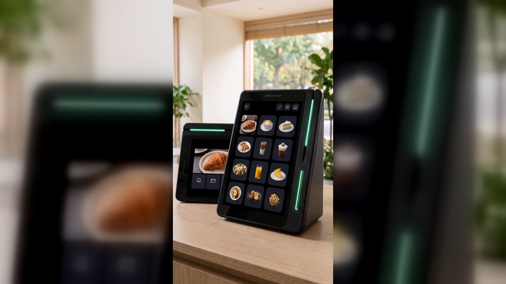

결제가 리뷰가 되고, 리뷰가 다음 손님이 되게 하는 방법
결론부터 말씀드리면, 계산대는 매장에서 손님을 가장 확실하게 만나는 자리입니다.
그런데 대부분의 매장에서 그 자리는 돈을 받고 끝납니다.
하루에 결제가 백 번 일어나면 손님을 백 번 만난 것입니다.
그런데 마감하고 나면 남는 것은 매출 숫자뿐입니다.
누가 왔는지, 무엇을 좋아했는지, 다시 올 사람인지는 알 수 없습니다.
리뷰를 부탁하려고 마음먹어도 손님 앞에서는 말이 잘 나오지 않습니다.
쿠폰을 만들어도 나눠 줄 짬이 없습니다.
매장 소식을 알리고 싶어도 손님은 이미 문을 나선 뒤입니다.
결제기는 결제만 합니다. 리뷰는 손님이 집에 가서 쓰는 것이고,
쿠폰은 따로 만들어 붙이는 것이고, 홍보는 따로 시간을 내서 하는 것입니다.
일이 네 개로 쪼개져 있으니 하나도 제대로 되지 않습니다.
사장님이 게을러서가 아니라, 도구가 나뉘어 있어서 생기는 일입니다.
손님이 매장 안에 있는 그 몇 분이 가장 좋은 순간인데
그 순간에 쓸 수 있는 도구가 결제기 하나뿐이었던 것입니다.
네이버단말기(Npay 커넥트)는 계산대에서 네 가지를 한 번에 처리합니다.
첫째, 결제입니다. 카드, QR, 페이스사인, 삼성페이까지
손님이 원하는 결제 수단을 받습니다.
둘째, 리뷰입니다. 따로 부탁하지 않아도 결제와 동시에
네이버 리뷰로 이어집니다.
셋째, 마케팅입니다. 결제 데이터로 고객 취향을 파악해
쿠폰·적립·맞춤 혜택을 자동으로 제공합니다.
넷째, 홍보입니다. 손님이 매장에 머무는 동안
매장 이벤트와 새소식을 자연스럽게 알립니다.
기기는 카운터 위에 올려 두는 크기입니다.
좁은 카운터에도 자리를 크게 차지하지 않습니다.
화면이 두 개여서 사장님이 보는 화면과 손님이 보는 화면이 나뉩니다.
손님이 계산을 마치면 손님 쪽 화면에 리뷰 키워드가 뜹니다.
「커피가 맛있어요」 「인테리어가 멋져요」 같은 것을 손가락으로 고르면
그 자리에서 포인트가 적립되고 쿠폰이 나갑니다.
사장님은 아무 말도 하지 않아도 됩니다. 손님도 오래 붙잡히지 않습니다.
그리고 그렇게 쌓인 리뷰는 다음 손님이 검색할 때 보는 화면에 남습니다.
겉모습은 유광 검정에 옆으로 비스듬한 쐐기 모양이고
옆면에 초록색 불빛이 한 줄 들어옵니다.
기둥처럼 세우는 스탠드가 따로 없어서 카운터 위에 그냥 올려두면 됩니다.
결제 수단도 카드와 QR·바코드는 물론 위챗페이, 알리페이플러스처럼
외국 손님이 쓰는 것까지 받습니다.
관광객이 오는 상권이라면 이 부분이 생각보다 자주 쓰입니다.
결제만 하고 끝나는 매장과 결제가 다음 손님을 부르는 매장의 차이는
사장님의 부지런함이 아니라 계산대에 무엇을 놓았는가입니다.
결제·리뷰·마케팅·홍보를 따로 하려고 하면 하나도 못 합니다.
한 자리에서 이어지게 해두면 손님이 계산하는 동안 저절로 됩니다.
네이버 공식 안내에도 앞으로 매장 운영에 도움이 될 새로운 기능이
추가될 예정이라고 되어 있습니다(일부 서비스는 오픈 준비 중입니다).
지금 계산대를 한 번 보시고, 그 자리가 돈만 받고 있는지 확인해 보십시오.
네이버단말기(Npay 커넥트)는 결제가 끝난 자리에서 네이버 리뷰·쿠폰·적립이 이어지는
스마트 사인패드입니다. 쓰던 포스는 그대로 두고 연결만 합니다.
· 상담 문의 · A/S 접수 — 평일 9시~20시 / 토·일·공휴일 11시~17시
· 정품 신제품 보증 · 수도권 직영 설치
누리네트웍스 · 결제는 더 쉽게, 매장은 더 스마트하게
🔗 https://nwpos.co.kr?utm_source=youtube&utm_medium=social&utm_campaign=daily7&utm_content=connect-intro
#네이버단말기 #네이버커넥트 #Npay커넥트 #네이버페이단말기 #네이버리뷰 #매장리뷰 #매장홍보 #단골관리 #쿠폰적립 #포인트적립 #사인패드 #결제단말기 #카드단말기 #포스기 #포스 #간편결제 #카드결제 #매장운영 #매장관리 #자영업 #소상공인 #자영업노하우 #개인사업자 #가맹점 #창업준비 #누리포스 #누리네트웍스 #Shorts
[SNS아이콘]
[SNS배너]